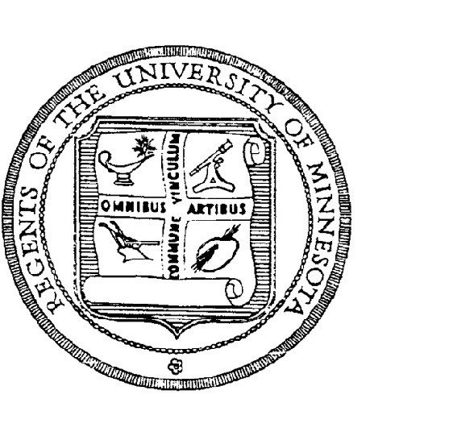

Wei-Cheng Lin
Wei-Cheng Lin
IC Designer, Photographer, Web/App Developer
About
Born: March 15, 1993
Location: Taipei, Taiwan; Minnesota, U.S.
Photos Self-Design Web: http://lintaiwan.github.io/
My LinkedIn: LinkedIn
Contact Me Email: linx0695@umn.edu; frank613055@gmail.com
Educations
| Master's degree,
Biomedical Engineering (BIOE), National Chiao Tung University, Taiwan, 2015-2017. |
|
|  | Exchange Student,
Computer Science & Engineering (CSE), University of Minnesota-Twin Cities, U.S., 2014-2015. |
 |
Bachelor's degree,
Electrical Engineering (EE), Chang Gung University, Taiwan, 2011-2014. |
Skills
Ic Design: Verilog, Digital Circuit Design, FPGA, Xillinx ISE, ModelSim, Hspice, EDA, Semiconductors
Programming Languages: Android SDK, Javascript, PHP, Python, Java, Matlab, HTML, CSS, C++
DataBase & Server: WAMP, Apache, MySQL, SQL
Art: Black & White Photography Portrait , Photoshop, Bridge (Art Director: Eric William Carroll)
Frameworks: Ruby on Rails, AngularJS
Version Control: Git
Experiences
 |
Self-Learner - My Codecademy Profile,
Since knew this Self-learning Web company, keep learning programming languages by myself till now. Now 6 skilled completed, got 65 Badges and reached 653 total points. Codecademy Web, 2014-2015. |
 |
Android App Development,
Join and learn in Information Systems Training Program of NTU( National Taiwan University ), NTU Information Systems Training Program, Taiwan, 2015 08-09. |
 |
PHP + MySQL Development,
Join and learn in Information Systems Training Program of NTU( National Taiwan University ), NTU Information Systems Training Program, Taiwan, 2015 08-09. |
| Photographer -
My Photography Web,
directed by Minnesota local photographer, Eric William Carroll, Minnesota-Twin City, US, 201409-201506. |
|
| SMIMS Student FPGA Internship,
SMIMS Technology Corp, Taiwan, 2014 06-08. |
|
| Undergraduate Student Researcher,
Research field: Noise-Tolerant Circuits Design, Low Power VLSI Design, director : I-Chyn Wey, Chang Gung University, 2013-2014. |
Honors & Awards
| Scholarship Awarded for Exchange Program at University of Minnesota- Twin cities,
Got Scholarship for Finance Support in 2014, , University of Minnesota: $5250 USD Ministry of Education in Taiwan: $10,000 USD,, 2014-2015. |
|
| 2014 Taiwan National Chip Implementation Center(CIC) Contest,
Enter 2014 IC Final Contest, Taiwan National Chip Implementation Center, Taiwan, 201404. |